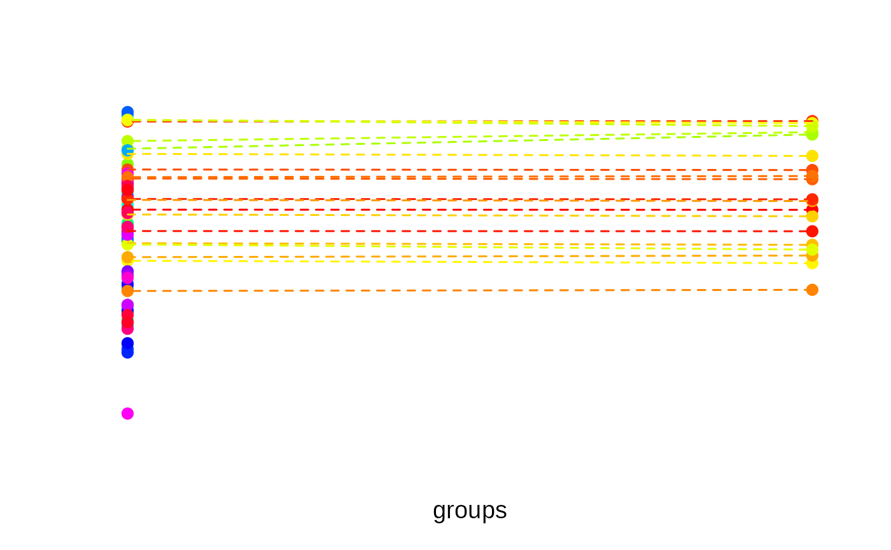
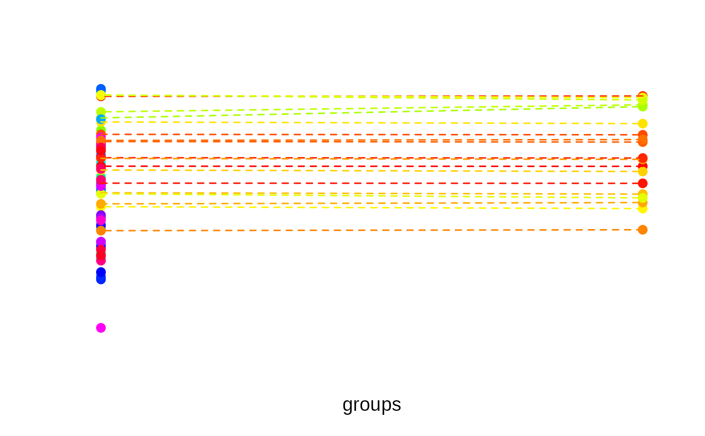

Conduct K-partite or unrestricted (minimum distance) matching to find pairs or groups of similar elements. By default, finding matches is based on the Euclidean distance between data points, but a custom dissimilarity measure can also be employed.
matching(
x,
p = 2,
match_between = NULL,
match_within = NULL,
match_extreme_first = TRUE,
target_group = NULL,
sort_output = TRUE
)Arguments
- x
The data input. Can be one of two structures: (1) A feature matrix where rows correspond to elements and columns correspond to variables (a single numeric variable can be passed as a vector). (2) An N x N matrix dissimilarity matrix; can be an object of class
dist(e.g., returned bydistoras.dist) or amatrixwhere the entries of the upper and lower triangular matrix represent pairwise dissimilarities.- p
The size of the groups; the default is 2, in which case the function returns pairs.
- match_between
An optional vector,
data.frameor matrix representing one or several categorical constraints. If passed, the argumentpis ignored and matches are sought between elements of different categories.- match_within
An optional vector,
data.frameor matrix representing one or several categorical constraints. If passed, matches are sought between elements of the same category.- match_extreme_first
Logical: Determines if matches are first sought for extreme elements first or for central elements. Defaults to
TRUE.- target_group
Currently, the options "none", smallest" and "diverse" are supported. See Details.
- sort_output
Boolean. If
TRUE(default), the output clusters are sorted by similarity. See Details.
Value
An integer vector encoding the matches. See Details for more information.
Details
If the data input x is a feature matrix, matching is based
on the Euclidean distance between data points. If the argument
x is a dissimilarity matrix, matching is based on the
user-specified dissimilarities. To find matches, the algorithm
proceeds by selecting a target element and then searching its
nearest neighbours. Critical to the behaviour or the algorithm is
the order in which target elements are selected. By default, the
most extreme elements are selected first, i.e., elements with the
highest distance to the centroid of the data set (see
balanced_clustering that relies on the same
algorithm). Set the argument match_extreme_first to
FALSE, to enforce that elements close to the centroid are
first selected as targets.
If the argument match_between is passed and the groups
specified via this argument are of different size, target elements
are selected from the smallest group by default (because in this
group, all elements can be matched). However, it is also possible
to specify how matches are selected through the option
target_group. When specifying "none", matches are
always selected from extreme elements, irregardless of the group
sizes (or from central elements first if match_extreme_first
= FALSE). With option "smallest", matches are selected from
the smallest group. With option "diverse", matches are
selected from the most heterogenous group according to the sum of
pairwise distances within groups.
The output is an integer vector encoding which elements have been
matched. The grouping numbers are sorted by similarity. That is,
elements with the grouping number »1« have the highest intra-group
similarity, followed by 2 etc (groups having the same similarity
index are still assigned a different grouping number,
though). Similarity is measured as the sum of pairwise (Euclidean)
distances within groups (see diversity_objective). To
prevent sorting by similarity (this is some extra computational burden),
set sort_output = FALSE. Some unmatched elements may be NA.
This happens if it is not
possible to evenly split the item pool evenly into groups of size
p or if the categories described by the argument
match_between are of different size.
Note
It is possible to specify grouping restrictions via
match_between and match_within at the same time.
Examples
# Find triplets
N <- 120
lds <- data.frame(f1 = rnorm(N), f2 = rnorm(N))
triplets <- matching(lds, p = 3)
plot_clusters(
lds,
clusters = triplets,
within_connection = TRUE
)
 # Bipartite matching with unequal-sized groups:
# Only selects matches for some elements
N <- 100
data <- matrix(rnorm(N), ncol = 1)
groups <- sample(1:2, size = N, replace = TRUE, prob = c(0.8, 0.2))
matched <- matching(data[, 1], match_between = groups)
plot_clusters(
cbind(groups, data),
clusters = matched,
within_connection = TRUE
)

# Match objects from the same category only
matched <- matching(
schaper2019[, 3:6],
p = 3,
match_within = schaper2019$room
)
head(table(matched, schaper2019$room))
#>
#> matched bathroom kitchen
#> 1 0 3
#> 2 3 0
#> 3 0 3
#> 4 0 3
#> 5 3 0
#> 6 3 0
# Match between different plant species in the »iris« data set
species <- iris$Species != "versicolor"
matched <- matching(
iris[species, 1],
match_between = iris[species, 5]
)
# Adjust `match_extreme_first` argument
matched2 <- matching(
iris[species, 1],
match_between = iris[species, 5],
match_extreme_first = FALSE
)
# Plot the matching results
user_par <- par("mfrow")
par(mfrow = c(1, 2))
data <- data.frame(
Species = as.numeric(iris[species, 5]),
Sepal.Length = iris[species, 1]
)
plot_clusters(
data,
clusters = matched,
within_connection = TRUE,
main = "Extreme elements matched first"
)
plot_clusters(
data,
clusters = matched2,
within_connection = TRUE,
main = "Central elements matched first"
)
# Bipartite matching with unequal-sized groups:
# Only selects matches for some elements
N <- 100
data <- matrix(rnorm(N), ncol = 1)
groups <- sample(1:2, size = N, replace = TRUE, prob = c(0.8, 0.2))
matched <- matching(data[, 1], match_between = groups)
plot_clusters(
cbind(groups, data),
clusters = matched,
within_connection = TRUE
)

# Match objects from the same category only
matched <- matching(
schaper2019[, 3:6],
p = 3,
match_within = schaper2019$room
)
head(table(matched, schaper2019$room))
#>
#> matched bathroom kitchen
#> 1 0 3
#> 2 3 0
#> 3 0 3
#> 4 0 3
#> 5 3 0
#> 6 3 0
# Match between different plant species in the »iris« data set
species <- iris$Species != "versicolor"
matched <- matching(
iris[species, 1],
match_between = iris[species, 5]
)
# Adjust `match_extreme_first` argument
matched2 <- matching(
iris[species, 1],
match_between = iris[species, 5],
match_extreme_first = FALSE
)
# Plot the matching results
user_par <- par("mfrow")
par(mfrow = c(1, 2))
data <- data.frame(
Species = as.numeric(iris[species, 5]),
Sepal.Length = iris[species, 1]
)
plot_clusters(
data,
clusters = matched,
within_connection = TRUE,
main = "Extreme elements matched first"
)
plot_clusters(
data,
clusters = matched2,
within_connection = TRUE,
main = "Central elements matched first"
)
 par(mfrow = user_par)
par(mfrow = user_par)